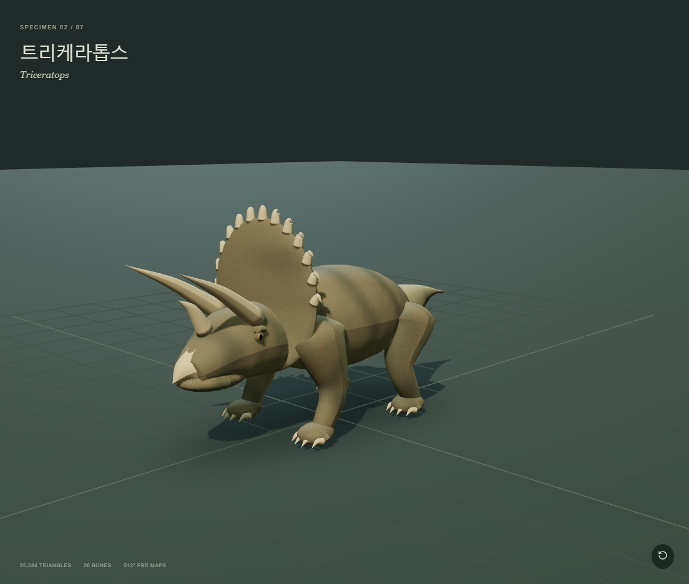

SPECIMEN 02 · 초식트리케라톱스
Triceratops돔 형태의 두꺼운 프릴, 이마 뿔 2개와 코뿔, 프릴 가장자리 돌기, 각질 부리, 네 다리와 발가락.
34,464 삼각형26 본9 동작
외형·텍스처 참고 자료와 반영 항목
NHM의 두개골·프릴·각질 뿔·피부 흔적 설명과 각룡류 피부 연구.
외형 수정: 세 뿔과 넓고 두꺼운 프릴 유지, 눈·프릴 가장자리 돌기 축소, 낮은 부리와 무거운 몸통. 발은 날카로운 발톱에서 둔한 발굽형 말단으로 변경.
피부 표현: 다른 종보다 큰 자갈형 비늘. 거칠기와 미세 주름을 색상·노멀에 함께 반영.
참조 원본 열기 · 이전 디자인 비교
NHM · Triceratops 외형·피부 ↗Communications Biology 2022 · 각룡류 피부 비교 ↗수정 전 1차 모델

재생 가능한 애니메이션
대기 · 호흡걷기달리기발성 · 포효 자세물 마시기휴식주변 경계낮은 식생 뜯기방어 위협
디오라마에서의 생활 행동
낮은 식생 섭취, 목 숙이기와 턱 움직임, 가까운 포식자에 대한 머리 방어. 작은 무리의 결속은 디오라마 연출입니다.
6분 시뮬레이션 관찰 상태: 이동 · 낮은 식생 섭취 · 방어 · 회피 · 발성 자세 · 경계 · 음수
조사 근거와 해석
부리와 절단형 치아, 세 뿔과 프릴을 가진 네 발 초식동물. 뿔의 상흔은 싸움과 방어 해석의 근거입니다.
NHM · Triceratops ↗